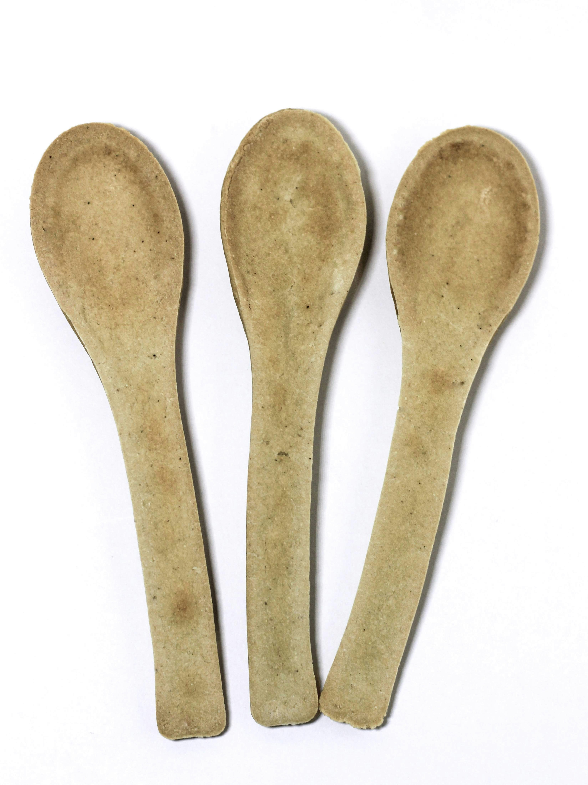
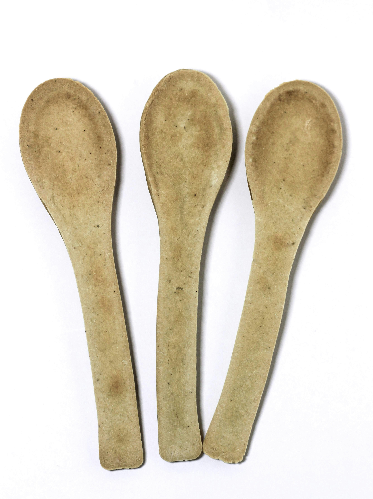

0€
0€
☰
0€
Adu tuulik kutsub sind rännakule läbi aja, käsitöö ja pärimuse. Ekskursioonid, töötoad ja ajatu meistriteos Hiiumaa keskmes
 

15€
Aegumatu klassika käsitsi valmistatud puulusikas, mis toob kööki tükikese Hiiumaa pärandit.
Sobilik igapäevaseks kasutamiseks või kingituseks neile, kes hindavad looduslikku materjali ja lihtsat ilu.